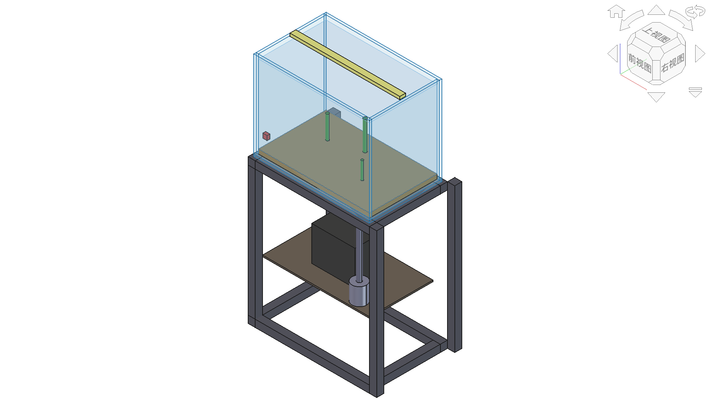

超越作品展示：高中技术与工程项目学习的测试、迭代与迁移
摘 要
项目式学习是高中技术与工程课程落实核心素养的重要方式，但课堂实践中容易把项目成果等同于学习成果，使方案比较、性能测试、失败分析和迁移运用被最终作品所遮蔽。本文结合生态鱼缸课程开发，将项目升级为"校园智能生态水循环舱"，构建"真实需求—多方案决策—数字建模—原型测试—诊断改进—综合验收—情境迁移"的学习路径。课程以结构、流程、系统、控制四个大概念为主线，设置需求确认、方案评审、原型初测、迭代复测和综合验收五个关键教学节点，引导学生用测试结果说明作品表现，用版本变化呈现工程改进，并在陌生任务中迁移所学。该设计把作品制作、工程思维和学习评价连接起来，为高中技术与工程项目学习从"做出作品"走向"解决问题"提供了可操作的教学思路。
Abstract
Project-based learning is an important approach to developing core competencies in high school technology and engineering courses. However, classroom practice often equates project products with learning outcomes, obscuring scheme comparison, performance testing, failure analysis, and transfer application behind the final product. Drawing on the development of an ecological fish tank course, this paper upgrades the project into a "Smart Ecological Water Circulation Cabin" for campus use, constructing a learning pathway of "real needs — multi-scheme decision-making — digital modeling — prototype testing — diagnostic improvement — comprehensive acceptance — contextual transfer." The course is organized around four big ideas — structure, process, system, and control — and sets five key teaching nodes: requirement confirmation, scheme review, prototype initial testing, iterative retesting, and comprehensive acceptance. This design connects product creation, engineering thinking, and learning assessment, providing an operational approach for moving high school technology and engineering project-based learning from "making products" to "solving problems."
一、问题提出：从"做出作品"走向"经历工程"
项目式学习适合承载技术与工程课程中的复杂任务。学生需要在需求、材料、结构、工艺、系统关系、控制逻辑、安全、成本和维护之间作出选择，知识因而不再只是章节中的孤立条目。《普通高中通用技术课程标准（2017年版2020年修订）》要求学生经历工程设计的一般过程和基础实践，初步运用计算机建模与仿真，并认识工程决策和管理的重要性；在电子控制部分，还明确涉及控制系统的安装、调试和改进[1]。课程教材研究所发布的2025年解读专刊目录显示，技术与工程课程标准已有新一轮修订解读文本[2]；管光海公开发表的解读文章则把"真实问题解决"和体现工程复杂性、整体性的"完整任务"列为实施重点[3]。这些变化共同指向一个问题：技术与工程课堂不能只看最终作品是否出现，还要看学生如何界定问题、比较方案、依据测试修订设计，并把形成的理解迁移到新情境。
本研究前期已经形成生态鱼缸课程的基本资产：以一个项目贯穿结构、流程、系统、控制四个单元，计划16—20课时，配套4份教案和一套 EcoFishTank 数字模型。这些材料解决了跨单元内容如何围绕同一工程任务组织的问题，也为后续的数字化表达、系统分析和控制设计提供了共同载体。
在进一步设计课程时，笔者发现，仅仅把四个单元放进同一个项目还不够。如果学生只有一个方案、一次制作和一次展示，项目仍然可能停留在"按要求完成作品"的层面。为此，课程改进聚焦于三个问题：其一，学生为什么选择这个方案；其二，作品经过怎样的测试和修改才逐步完善；其三，离开生态鱼缸这一具体情境后，学生能否运用结构、流程、系统和控制的关系解决新的问题。
工程教育研究把设计视为准备、规划、评价方案的迭代过程，测试结果需要返回设计并推动再次改进[4]。项目式学习也强调在反馈、修订和完善中形成高质量成果[5]。因此，本文不再把最终展示作为项目终点，而是把"测试、迭代与迁移"嵌入教学全过程，使学生既能完成作品，又能说明作品为什么这样设计、怎样得到改进，以及所学能否用于新的工程问题。
二、教学思路：从内容贯通走向学习闭环
（一）大概念不是单元标签，而是跨情境的关系结构
结构、流程、系统、控制可以分别成为教学单元，但"大概念贯通"的价值不在于四个词都出现在同一项目中，而在于学生能否解释它们的相互制约。例如，缸体与支架的结构选择会改变设备布置和维护流程；循环系统的接口和阻力会影响泵的选择与能耗；水温控制的设定值、传感位置和干扰恢复又依赖系统边界与结构空间。学生若只能复述概念定义，却不能说明这些关系，项目仍可能只是四次相邻的制作活动。
因此，学生对大概念的学习表现可以分成三个层次：第一层是"识别"，即能在项目中指出结构、流程、系统和控制要素；第二层是"解释"，即能用因果、约束、权衡和反馈说明概念之间的关系；第三层是"迁移"，即能在温室、校园节水或小型水培等陌生情境中重新界定系统边界、选择指标并提出可测试方案。迁移并非对原任务表面特征的复制，而是把形成的知识结构用于新问题[7]。作品是否运行只能覆盖其中一部分，不能替代解释与迁移表现。
（二）完整工程任务必须包含决策、测试和重设计
作品导向的课堂常把"做出来"当作终点：学生只有一个方案，缺少比较和权衡；只有一次展示，缺少测试后的重新设计；只在熟悉情境中完成任务，难以判断能否迁移。较为完整的工程任务应形成以下链条：从真实需求出发，提出多个方案，依据标准作出选择，通过数字模型和原型表达设计，再经过测试、诊断和修改形成新版本，最后在新的任务中运用所学。
flowchart LR
A["真实用户与约束"] --> B["多个备选方案"]
B --> C["有依据的方案决策"]
C --> D["数字模型与工程原型"]
D --> E["标准化性能测试"]
E --> F["失败诊断与版本迭代"]
F --> G["综合验收与运维交付"]
G --> H["陌生情境迁移任务"]
H --> I["总结反思与迁移"]
（三）让学习过程留下可观察的成果
评价不应等到项目结束后才附加。教师需要先思考希望学生形成什么能力，再安排能够表现这些能力的任务[6]。例如，结构学习不能只对应"制作支架"，还应形成方案草图、承载测试和修改记录；系统学习不能只对应"讲解生态循环"，还应形成系统框图、接口说明以及流量、水温等测试记录；控制学习也不能满足于"程序能够运行"，还要观察学生能否根据响应情况调整参数和程序。
因此，项目中需要保留三类学习成果：一是方案草图、流程图、系统框图和程序等设计成果；二是测试记录、故障分析和版本修改等过程成果；三是学生的解释、反思和迁移任务等学习成果。三类成果相互补充，使评价不再只围绕最终作品展开。
三、案例重构：校园智能生态水循环舱
（一）项目情境、用户与成功标准
项目面向校内班级、实验室或社团的公共空间，设计一套便于维护的"智能生态水循环舱"。教学中可邀请校内使用者参与需求确认，共同讨论使用位置、可用空间、供电与排水条件、维护责任、预算、安全要求和可接受噪声，使项目任务更贴近真实场景。
驱动问题为：怎样用有限材料、空间和能耗，设计一套安全、稳定、可维护，并能用测试结果说明性能的校园智能生态水循环系统？ 评价标准由师生结合学校现有仪器、空间和课时共同确定。漏水、电气暴露、倾覆和过载等是必须满足的安全要求；流量、温度稳定、能耗、噪声和维护耗时则作为作品性能与使用体验的重要指标。
（二）从作品制作到持续改进
| 维度 | 现有生态鱼缸课程 | 本文智能生态水循环舱 |
|---|---|---|
| 基本组织 | 一个项目贯穿结构、流程、系统、控制四单元 | 保留跨单元贯通，形成持续改进的学习闭环 |
| 课程资源 | 4份教案与教师数字模型 | 课程任务、关键节点和评价工具 |
| 用户参与 | 用户与委托情境尚未明确 | 实施前完成真实需求确认与变更记录 |
| 方案生成 | 以完成单元设计任务为主 | 至少形成两个可比较方案并说明权衡理由 |
| 工程测试 | 主要关注作品设计与制作 | 增加初测—诊断—修改—复测环节 |
| 学习评价 | 以单元任务和作品为主 | 将作品、过程、解释与迁移综合评价 |
| 失败处理 | 失败主要在制作中即时解决 | 把故障、诊断和改进过程转化为学习资源 |
（三）四大概念的任务—产物—指标矩阵
| 大概念 | 核心任务 | 阶段成果 | 可观察指标 | 教学关注 |
|---|---|---|---|---|
| 结构 | 缸体、支架与设备仓的承载和安全设计 | 多方案草图、CAD模型、结构样件 | 静载、变形、稳定、漏水与安全检查 | 结构选择与使用情境是否匹配 |
| 流程 | 装配、造景、调试和维护流程设计 | 流程图、工序表、风险清单 | 实际工时、返工、等待和流程变化 | 学生能否根据实践调整流程 |
| 系统 | 水循环、过滤、增氧、照明与生物要素整合 | 系统边界图、接口表、决策矩阵 | 流量、水温、水位、能耗和故障 | 学生能否解释要素间的联系 |
| 控制 | 温控、水位或照明控制设计 | 控制框图、接线或程序、原型 | 误差、响应、抗干扰和稳定运行 | 学生能否根据运行情况改进控制 |
四个大概念并不是四条互不相干的流水线。结构决定设备空间与接口位置；流程决定装配次序、返工风险和维护可达性；系统分析确定要素、边界与功能关系；控制通过传感、判断和执行调节系统状态。综合验收必须检查接口：例如传感器安装位置是否导致读数滞后，水路布置是否增加阻力，设备仓是否便于断电检修。
flowchart TB
U["用户需求与约束"] --> S1["结构：缸体/支架/设备仓"]
U --> S2["流程：装配/调试/维护"]
U --> S3["系统：水循环/过滤/增氧/照明"]
U --> S4["控制：传感/判断/执行"]
S1 --> I["接口与安全"]
S2 --> I
S3 --> I
S4 --> I
I --> T["性能测试与故障记录"]
T --> R["版本修订"]
（四）教师数字模型的有限作用

图3可作为项目导入和方案讨论的支架。学生通过观察缸体、支架、设备仓和水路部件的空间关系，发现结构布置、设备安装和后期维护之间的联系。在此基础上，各小组需要重新提出自己的设计方案，而不是简单复制教师模型。数字模型还可以用于尺寸调整、空间检查和版本比较，为后续实物制作和性能测试做好准备。
（五）五个关键教学节点
| 教学节点 | 学生要回答的问题 | 阶段成果 | 教师指导 |
|---|---|---|---|
| 需求确认 | 为谁设计？需要满足哪些要求？ | 用户需求表、约束表、需求变化记录 | 引导学生补充访谈或现场观察 |
| 方案评审 | 为什么选择该方案而不是其他方案？ | 至少两个方案、决策矩阵、权衡说明 | 帮助学生完善标准、补充方案 |
| 原型初测 | 在什么条件下出现了什么结果？ | 测试方案、原始读数、失败照片或日志 | 指导学生规范测试条件并分析原因 |
| 迭代复测 | 哪项修改改善了哪个问题？ | 版本差异、修改理由、同条件复测 | 建立修改措施与测试结果的联系 |
| 综合验收 | 作品表现与学习目标是否一致？ | 验收表、运维说明、概念解释、迁移任务 | 通过答辩和新情境任务深化理解 |
这些节点并不是把课堂变成表格审批，而是帮助教师把握项目学习的关键过程。记录可以简洁，但方案比较、测试条件、失败原因、版本变化和迁移任务等核心环节不能省略。
四、教学实施：让测试和迭代真正进入课堂
（一）围绕四个大概念安排连续任务
课程可在16—20课时内展开。结构单元重点完成需求分析、支架与缸体方案设计；流程单元重点完成装配、调试和维护流程；系统单元重点分析水循环、过滤、增氧、照明等要素的关系；控制单元重点完成传感器、执行器与控制程序的设计。四个单元不是简单拼接，而是围绕同一作品逐步深入。前一阶段形成的问题和成果直接进入后一阶段，学生始终面对的是同一个不断完善的工程系统。
| 教学阶段 | 主要活动 | 学习成果 | 教师关注 |
|---|---|---|---|
| 需求与结构设计 | 调查使用场景，提出支架、缸体和设备仓方案 | 需求表、多方案草图、数字模型 | 是否考虑安全、空间、材料和维护 |
| 流程与系统设计 | 规划装配、调试和维护流程，分析系统要素和接口 | 流程图、系统框图、接口表 | 是否理解结构、流程与系统的相互影响 |
| 原型制作与测试 | 制作原型，开展漏水、承载、流量、温度或控制测试 | 原型、测试记录、故障单 | 测试条件是否清楚，记录是否真实 |
| 诊断与迭代 | 根据测试结果查找原因，修改结构、流程或程序 | 版本对照、修改说明、复测记录 | 修改是否有依据，复测是否回应问题 |
| 展示与迁移 | 综合验收，并完成新的工程情境任务 | 作品说明、反思报告、迁移方案 | 能否解释改进过程并迁移核心方法 |
（二）把测试变成推动学习的关键事件
测试不是作品完成后的附加环节，而是学生重新认识问题的重要机会。结构测试可以关注支架稳定、可见变形和漏水情况；流程测试可以比较计划工时与实际工时，记录返工和等待；系统测试可以选择流量、水温、水位或能耗等学校能够测量的指标；控制测试则关注设定值、实际值、响应时间和干扰后的恢复情况。
教师不必追求复杂仪器和大量数据，关键是让学生回答三个问题：测试是在什么条件下进行的？结果说明了什么问题？下一版准备修改什么？只要学生能够根据真实现象提出解释并重新设计，测试就从"检查作品"转化为"促进学习"。
（三）让版本变化呈现工程思维
学生常把修改理解为修补外观或排除故障。教师需要引导他们建立"现象—原因—证据—修改—复测"的思考链。例如，流量不足可能来自水泵选型、管路过长、弯头过多或过滤材料阻力过大；温度波动可能与传感器位置、控制阈值和环境干扰有关。不同原因对应不同修改，修改后还要在相近条件下重新测试。
因此，每组至少保存初始方案、测试后方案和最终方案三个版本。版本记录不求复杂，可以用照片、草图、CAD文件或简短表格呈现，但必须说明"改了什么、为什么改、结果怎样"。这比单纯展示一个完成度较高的终版更能体现学生的工程思维。
（四）合理使用数字工具
FreeCAD用于帮助学生观察空间关系、调整尺寸和比较方案，不能代替实物制作与测试。人工智能可以辅助学生整理资料、检查表达和提出可能的问题，但方案选择、测试记录和改进理由必须由学生根据实际过程完成。教师还应把水电安全、结构稳定和工具操作作为项目底线，在保证安全的前提下为学生保留试错和改进空间。
五、教学评价：作品、过程与迁移并重
（一）作品评价关注"能否说明为什么"
作品评价除了安全、功能和外观，还应关注学生能否说明方案与需求之间的关系，能否用测试结果解释作品表现。一个运行正常的作品，如果没有方案比较和测试记录，只能说明学生完成了制作；一个尚有不足的作品，如果经历了清楚的诊断、修改和复测，同样具有重要的学习价值。
（二）过程评价关注"怎样一步步改进"
过程评价可围绕四个方面展开：是否提出了有实质差异的方案，是否依据需求和约束作出选择，是否开展了条件清楚的测试，是否根据测试形成了可说明的版本变化。教师可结合工程日志、阶段汇报、同伴评审和作品档案进行评价，避免把小组最终得分简单等同于每名学生的学习表现。
（三）迁移评价关注"能否解决新的问题"
项目结束后，可设置小型水培、温室通风或校园雨水利用等新情境，要求学生重新界定用户需求、系统边界和工程约束，形成两个方案并设计测试方法。迁移任务不要求学生复制鱼缸外形，而是观察他们能否把方案比较、系统分析、控制设计和测试改进的方法用于新问题。迁移并非对原任务表面特征的复制，而是把形成的知识结构用于新情境[7]。
评价时可以将作品表现、项目过程和迁移任务分别计分，再结合学生的个人解释与反思形成综合判断。这样的评价既保留项目作品的吸引力，也使那些不容易在成品外观中显现的思考、选择和改进过程得到重视。
六、实践反思：项目学习如何超越作品展示
（一）把项目成果转化为可观察的学习过程
相对于单纯用一个项目贯通多个单元，本设计更重视学生在项目中经历了什么。学生不仅提交最终方案，还要说明比较过哪些方案、依据什么作出选择；不仅展示作品能否运行，还要说明测试发现了什么、如何据此改进；不仅回答鱼缸项目中的问题，还要尝试在新的情境中运用相同的思考方法。
这种设计也改变了教师角色。教师要在需求阶段帮助学生区分真实需要和个人偏好，在方案阶段追问选择标准和取舍，在测试阶段帮助学生控制条件并守住安全底线，在迭代阶段追问修改依据，在验收阶段引导学生分别说明作品性能、改进过程和迁移思路。教师不是替学生解决问题，而是通过关键追问推动学生把经验上升为方法。
（二）失败不是噪声，而是关键证据
工程学习的价值往往发生在第一次不成功之后。漏水、流量不足、传感器滞后、控制震荡、维护困难或流程返工，都能暴露学生最初认识的不足。如果课堂只展示终版，这些最有教育价值的过程就会消失。因此，教师应鼓励学生保存失败现象、分析原因、记录修改并再次测试，让"没有一次成功"成为理解工程迭代的真实资源。
但"失败有价值"不意味着可以牺牲安全。漏电、倾覆、玻璃破裂等高风险情形应由教师预先设置硬门并及时中止；学生可以分析风险和替代方案，不必通过真实危险来获得学习经验。
（三）在教学深度与课堂负担之间保持平衡
测试和记录过多也可能挤压学生的制作时间。教师可以根据学校设备和课时条件选择少量关键指标，例如漏水、流量、水温、能耗或响应时间，不必追求复杂、昂贵的测量。记录形式也应尽量简洁，只要能够说明版本、测试现象和修改理由即可。同时，项目既有小组协作，也要保留个人解释和迁移任务，避免以小组作品的完成度代替每名学生的真实学习。
七、结论
大概念贯通解决的是"知识如何在一个项目中相互连接"，测试、迭代与迁移进一步解决的是"学生如何真正经历工程"。以校园智能生态水循环舱为载体，本文建立了真实需求、多方案决策、数字模型与原型、性能测试、失败诊断、版本改进、综合验收和情境迁移的连续任务链，并把结构、流程、系统、控制落实到具体活动和学习成果中。
这一设计的重点不是增加更多表格，而是改变项目学习的课堂节奏：让学生在方案比较中学会权衡，在性能测试中发现问题，在版本迭代中改进设计，在陌生情境中检验理解。只有超越对最终作品的单一关注，项目式学习才能真正发挥技术与工程课程在实践育人、工程思维和创新能力培养方面的价值。
参考文献
- 中华人民共和国教育部. 普通高中通用技术课程标准: 2017年版2020年修订[S]. 北京: 人民教育出版社, 2020.
- 顾建军, 管光海. 《普通高中技术与工程课程标准日常修订版(2017年版2025年修订)》解读[J]. 基础教育课程, 2025(12): 68-70.
- 管光海. 基于真实问题解决的高中技术与工程课程实施——《普通高中技术与工程课程标准日常修订版(2017年版2025年修订)》的理念变化和实施建议[J]. 福建教育, 2025(24): 75-80.
- National Academies of Sciences, Engineering, and Medicine. Building capacity for teaching engineering in K-12 education[M]. Washington, DC: The National Academies Press, 2020.
- LARMER J. Gold standard PBL: critique and revision[EB/OL]. PBLWorks, 2016-02-29[2026-08-02]. https://www.pblworks.org/blog/gold-standard-pbl-critique-and-revision.
- MISLEVY R J, STEINBERG L S, ALMOND R G. On the structure of educational assessments[J]. Measurement: Interdisciplinary Research and Perspectives, 2003, 1(1): 3-62.
- BRANSFORD J D, BROWN A L, COCKING R R, et al. How people learn: brain, mind, experience, and school: expanded edition[M]. Washington, DC: National Academy Press, 2000.